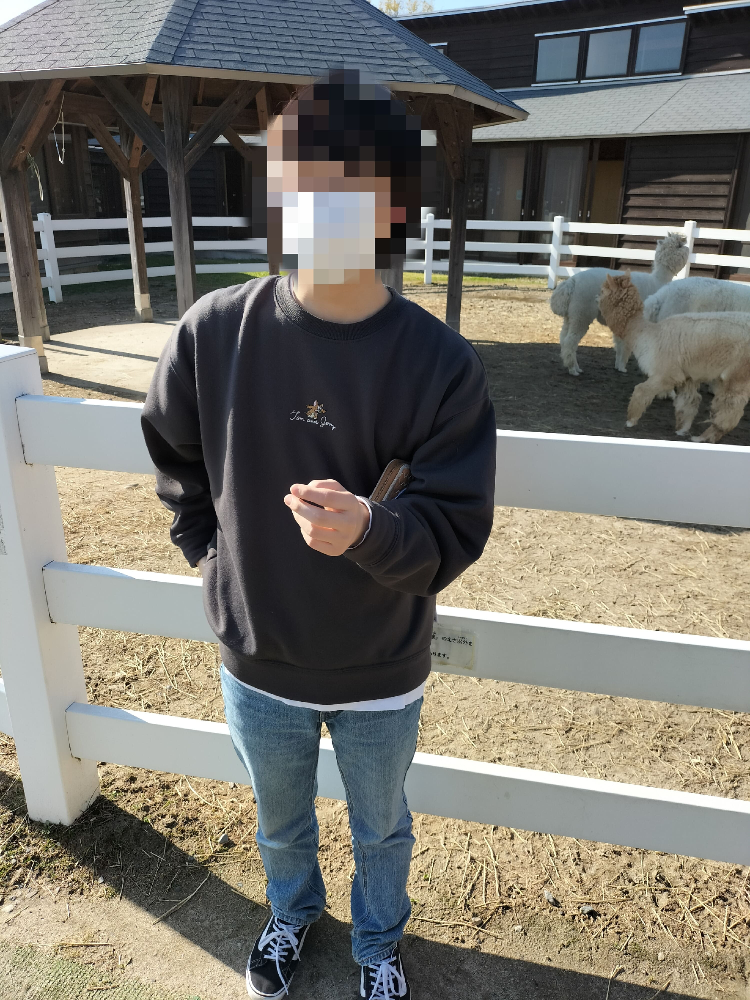
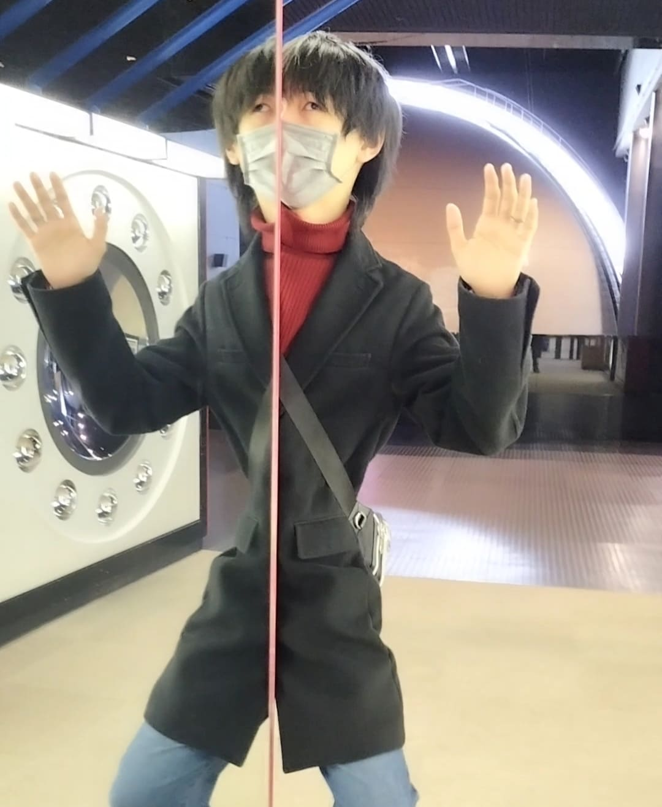
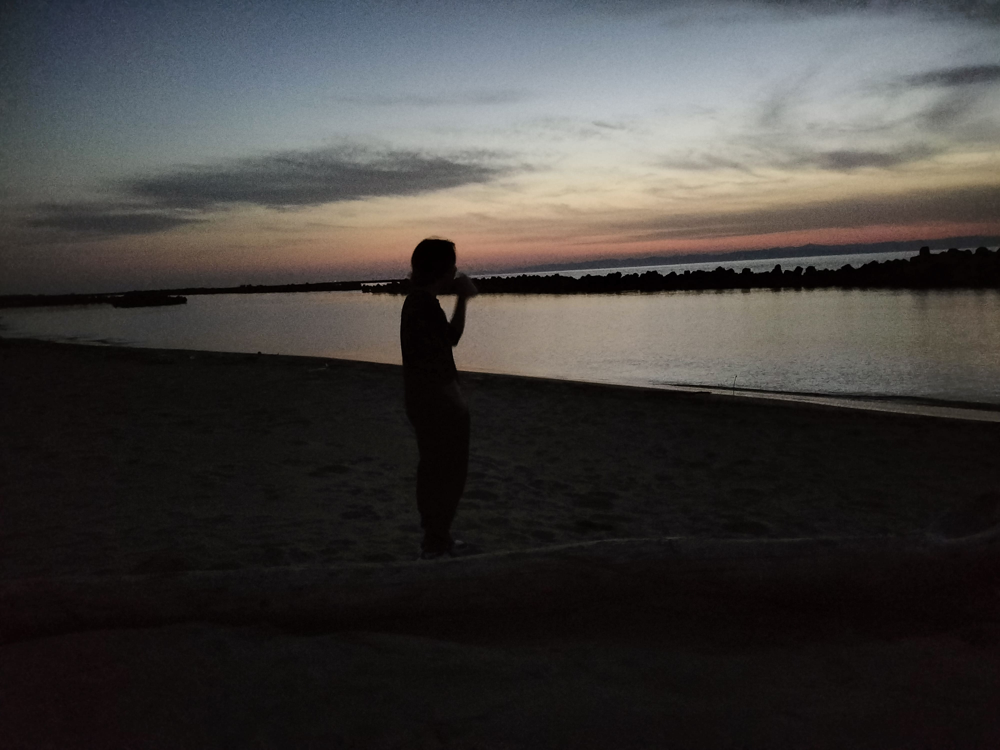
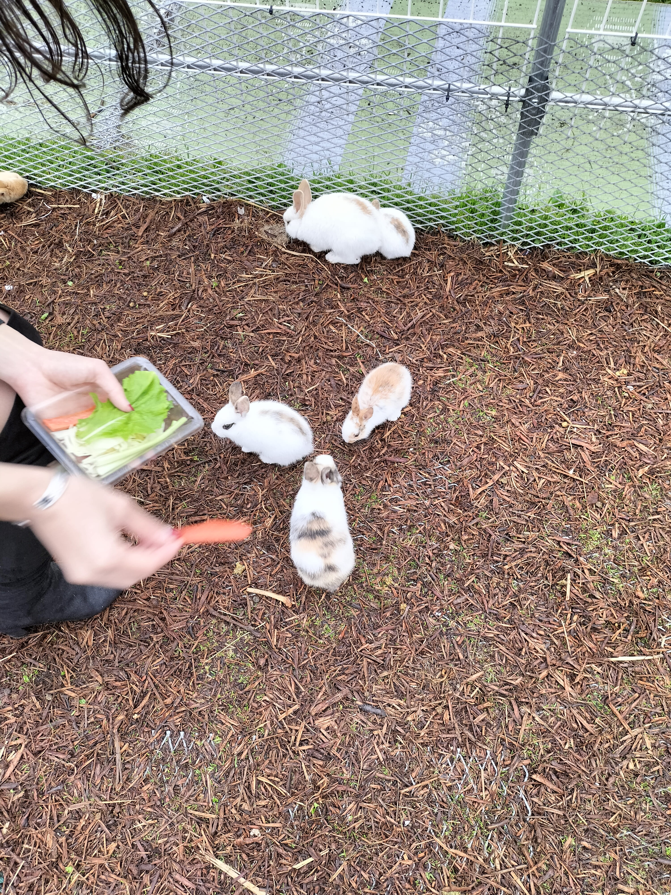

映画は、趣味というほどでもないですが、最近み始めるようになりました。好きな作品としてはアナザーラウンド、最強の2人などがあります。
旅行もまた最近楽しさに気づきました。コロナ禍で県外に出られなかったので、これからが楽しみです。田舎というよりは都会が好きで、大きな建物の中でショッピングしたりするのが好きです。新潟は旅行スポットはたくさんあっていいですが、どれもが自然を楽しむタイプの観光なので、たまには県外の大都会に行ってみたいです。
映画は、趣味というほどでもないですが、最近み始めるようになりました。好きな作品としてはアナザーラウンド、最強の2人などがあります。
旅行もまた最近楽しさに気づきました。コロナ禍で県外に出られなかったので、これからが楽しみです。田舎というよりは都会が好きで、大きな建物の中でショッピングしたりするのが好きです。新潟は旅行スポットはたくさんあっていいですが、どれもが自然を楽しむタイプの観光なので、たまには県外の大都会に行ってみたいです。
|  |  | 画像左：いくとぴあ食花 画像右：新潟県立自然科学館 |
|  |  | 画像左：西海岸公園 画像右：白根グレープガーデン |